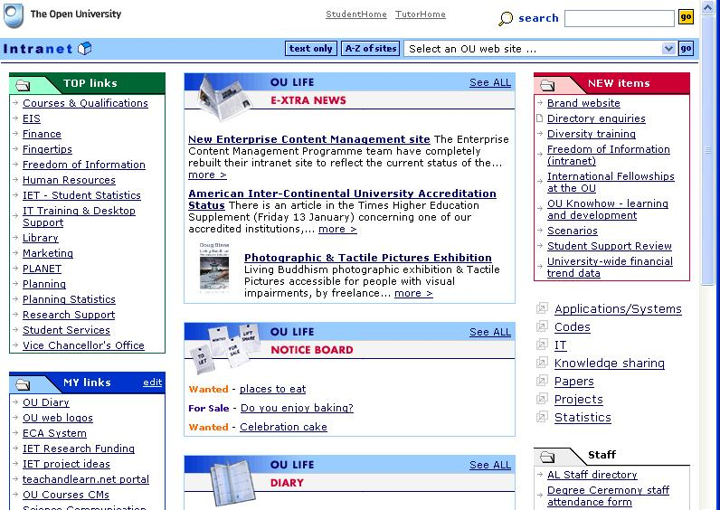

Dutiful employee that I am, the homepages of my various browsers tend to be either the Open2.net site (when, oh, when are they going to make an RSS feed of future programming available...?!) or the Intranet default/home page:

The one thing that I really don't like about the Intranet page, however, is the presence of classified ads...
How much nicer it would be if I could replace this box with one entitled 'OU Bloggers' that posted the titles of - and links to - recent blog posts made by OU people who blog...
PS I've also set up an OU Bloggers blogroll on Bloglines, although I have to admit I made a couple of the blogs private, either because they look more internally oriented than public blogs, because they appear to have lapsed, or because there isn't an RSS feed...)
Just because, here's a test link from the Blogroll associated with my OU Blogger folder...
I'm not sure if it's possible to get and aggregated feed from a blogroll, or an OPML file of the (public) blogs included in the blogroll, but I'll go have a look round Bloglines when I get a chance...
PPS [DON'T BOTHER WITH THIS - THIS FEED WILL DATE REALLY QUICKLY - I'M WORKING ON AN ALTERNATIVE...] here's a place you can subscribe to an aggregated, river of news feed from my list of OU Bloggers (here's the actual feed as RSS or Atom) (courtesy of FEEDblendr
Posted by ajh59 at January 20, 2006 05:08 PM